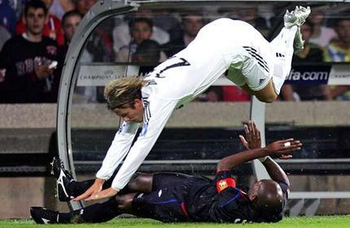
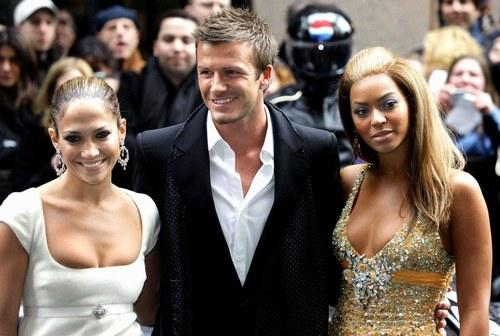

Chương Mười Lăm

ắm trong tay “mỏ vàng” Beckham, Real Madrid lập tức “khai mỏ” bằng chuyến du đấu Viễn Đông vào tháng 7, 2003. Trước chuyến đi, David bị một phen tẽn tò. Xếp đồ đầy ba va ly lớn mang theo, khi đến sân tập, anh giật mình thấy đồng đội ai cũng chỉ xách một ba lô nhỏ. Sợ bị chê “chảnh”, David vội vứt lại hầu hết hành lý, chỉ giữ vài món thiết yếu, cất trong chiếc túi con con. Lên đến máy bay, anh mới phát hiện: Thì ra các bạn đều mang hàng đống đồ đạc, có điều họ đã chất hết lên xe buýt, đưa đi ký gửi từ trước. Bỗng nhiên hóa nghèo, anh phải mượn bạn người thì cái quần, kẻ thì cái áo để có đồ mà thay trong chuyến hành trình.
Sau những trận giao hữu ở Bắc Kinh, Tokyo, Hong Kong, và Bangkok, Real về nước, chuẩn bị cho mùa giải mới. David khởi đầu như mơ trong màu áo trắng, anh ghi bàn ấn định tỷ số 3 – 0, giúp Real hạ Mallorca để giành Siêu Cúp TBN. Trong trận mở màn La Liga gặp Betis, anh lại lập công, góp phần đem về chiến thắng 2 – 1. David nhanh chóng thiết lập chỗ đứng bên cánh phải, bên cạnh Figo nơi cánh trái, và Zidane ở vị trí trung tâm. Trong 16 trận đầu chơi cho Real, anh ghi đến 5 bàn. Tháng 11, Real đại thắng Bilbao 3 – 0, lên ngôi đầu bảng. Đầu tháng 12, đội bước vào trận cầu siêu kinh điển với Barcelona, giành thắng lợi 2 – 1 ngay tại Camp Nou. Người hâm mộ bắt đầu mơ về một cú ăn ba, như Manchester United năm 1999. Tại sao không? Đội hình Real mạnh hơn hẳn so với United kia mà.
Chẳng may, kỳ nghỉ giáng sinh làm mất đà tiến của Beckham. Ở Anh, giáng sinh là mùa cực nhất, phải thi đấu nhiều nhất, còn tại TBN, cầu thủ nghỉ ngơi suốt nửa tháng. Đã lâu lắm mới được thư thả trong dịp cuối năm, David tận dụng thời gian để tổ chức tiệc tùng[1] và nghỉ dưỡng, lơ là việc tập thể lực. Hậu quả là khi nửa sau mùa giải bắt đầu, anh đuối hẳn, không còn sung sức như trước[2]. Mà không chỉ David, kể từ tháng 2, cả đội Real bỗng thi đấu vô cùng tậm tịt. Cuối mùa giải, CLB đá 5 trận thua cả 5, không những mất chức vô địch vào tay Valencia, mà còn rơi xuống tận hạng tư, sau cả Barcelona và Deportivo La Coruna. Trận thua Mallorca 2 – 3, David bị đuổi khỏi sân vì cãi trọng tài. Trận thua Sociedad 1 - 4, anh thất vọng cùng cực, muốn lấy tay che mắt lại để khỏi chứng kiến cảnh nhục. Không thể tưởng tượng một đội bóng lấp lánh đầy tinh tú lại có thể thua liên tiếp và thảm hại đến vậy!
Tại các cúp, tình hình cũng tệ không kém. Tứ kết C1, gặp đối thủ dưới cơ Monaco, Real thắng thuyết phục 4 – 2 trong trận lượt đi, tưởng chừng nắm chắc vé đi tiếp, nhưng lại chủ quan để thua 1 – 3 ở lượt về, bị loại vì luật bàn thắng sân khách. Đáng nói hơn nữa, kẻ khủng bố cầu môn Iker Casillas chính là Fernando Morientes, một tiền đạo thuộc biên chế…Real, đang khoác áo Monaco theo hợp đồng cho mượn. Mọi hy vọng đành đổ dồn vào trận chung kết Cúp Nhà Vua tại sân Olympic Barcelona, nơi Real đối đầu Zaragoza. Beckham sút phạt, mở tỷ số cho Real, song Zaragoza bất ngờ lật ngược thế cờ, gác lại 2 – 1. Từ một cú sút phạt khác, Roberto Carlos gỡ hòa, trước khi trọng tài rút thẻ đỏ, đuổi một cầu thủ Zaragoza. Lực lượng chênh lệch, lại chơi trong thế 11 chọi 10, Real vẫn đá như bị ma ám, không sao đưa được bóng vào khung thành. Sang đến hiệp phụ, đến lượt Guti của Real bị đuổi. Zaragoza lên tinh thần, kiên cường phòng thủ, rồi phản công ghi bàn vào phút 111 do công Galletti. “Ngân Hà Trắng” kết thúc mùa giải trắng tay, không một danh hiệu.
Mùa 2004 – 2005, Real sa thải HLV Carlos Queiroz, đem về Jose Antonio Camacho. Đội tiếp tục bổ sung bộ sưu tập các vì sao, với tân tiền đạo Michael Owen. Như vậy, trong tay Florentino Perez có đến bốn Quả Bóng Vàng (Zidane, Ronaldo, Figo, Owen), và ba Quả Bóng Bạc (Beckham, Raul, Carlos). Vậy mà trắng tay vẫn hoàn trắng tay. Hai mùa liên tiếp, Real xếp sau Barcelona tại giải VĐQG, và bị loại từ vòng 1/16 Cúp C1. HLV đến rồi đi: Camacho, Remon, Luxemburgo[3], Caro, không ai tìm ra bí quyết kết hợp những cá nhân xuất chúng thành một tập thể hoàn hảo. Beckham đá không quá tệ, nhưng cũng chẳng nổi trội. 2 mùa 2004 – 2005, 2005 – 2006, anh ghi vỏn vẹn 4 và 5 bàn, hiệu suất quá thấp so với thời khoác áo United (trung bình hơn 10 bàn mỗi mùa).

Beckham trong trận Real Madrid thua Lyon 0 – 3, Cúp C1 mùa 2005 – 2006 (Ảnh: TheAge)
Với Real như thế, còn với đội tuyển Anh thì sao? Thể lực không đảm bảo, lại chịu tác động từ những dư âm scandal tình ái, Beckham thể hiện phong độ đáng quên tại Euro 2004. Trận ra quân gặp Pháp, anh có công kiến tạo, giúp Lampard mở tỷ số cho Anh, song lại đá hỏng phạt đền, bỏ lỡ cơ hội đưa đội nhà vượt lên dẫn 2 – 0. Đây là cú phạt đền hỏng vô cùng tai hại, bởi sau đó, Zidane ghi liền hai bàn vào các phút 91 và 93, đem về chiến thắng cho Pháp một cách đầy kịch tính. Nhờ sự tỏa sáng của tiền đạo 18 tuổi Wayne Rooney, Anh lần lượt hạ Thụy Sỹ và Croatia, đoạt vé vào tứ kết. Tại đây, đội hòa chủ nhà BĐN 2 – 2 sau 120 phút, phải định đoạt số phận bằng những quả penalty luân lưu. Trên chấm 11m, Beckham một lần nữa thất bại, khiến Tam Sư phải xách va ly về nhà. Nếu tính cả tình huống trong trận gặp Thổ Nhĩ Kỳ ở vòng loại Euro[4], đây là lần thứ ba liên tiếp David đá hỏng penalty trong màu áo ĐTQG, con số thật khó tin với một chuyên gia sút phạt đẳng cấp như anh.
Tuy nhiên, qua đến World Cup 2006, David trở lại vai trò người hùng. Trên đất Đức, có thể nói không ngoa, một mình anh gánh cả Tam Sư trên vai. Gặp Paraguay, từ cú đá phạt hiểm hóc của David, hậu vệ Carlos Gamarra đưa nhầm bóng vào lưới nhà. Gặp Trinidad và Tobago, David kiến thiết cả hai bàn cho Crouch và Gerrard[5]. Vòng 1/16, dù bị ốm, anh vẫn gắng gượng vào sân, ghi bàn duy nhất vào lưới Ecuador. Xui thay, Beckham dính chấn thương, phải sớm rời sân trong trận tứ kết, đành ngồi ngoài, rơi nước mắt, chứng kiến đội nhà lần thứ hai liên tiếp thất bại trước BĐN sau những loạt luân lưu.
Về thành tích, tuyển Anh cũng vào đến tứ kết như World Cup 2002, nhưng không để lại ấn tượng đẹp như bốn năm về trước. Không những không đẹp, phải nói thẳng rằng họ chơi một lối chơi hết sức…cù nhầy và nhàm chán. Ngoài Beckham tỏa sáng, chỉ Joe Cole và Gerrard thỉnh thoảng có được vài giây phút xuất thần, còn lại đều rất tầm thường. Trận nào cũng vậy, xem Anh đá đều có cảm giác buồn ngủ, thậm chí nhức đầu! Không phải ngẫu nhiên mà người hâm mộ điên tiết, đòi “lấy đầu” HLV Eriksson. Bản thân David Beckham cũng chán nản, tuyên bố từ chức thủ quân, trao băng đội trưởng Tam Sư lại cho người khác.
Trong khoảng 2004 – 2006, David chỉ để lại dấu ấn ở World Cup 2006. Trên sân cỏ, anh không được đề cao bằng khi ra ngoài hoạt động xã hội. Từ năm 2005, David nhận trách nhiệm Đại Sứ Thiện Chí cho Quỹ Nhi Đồng Liên Hiệp Quốc (UNICEF), đi khắp nơi từ Á sang Phi để tuyên truyền cho quyền lợi trẻ em. Anh cũng nhận làm đại diện cho Malaria No More, tổ chức bài trừ bệnh sốt rét, và hưởng ứng hoạt động của Help for Heroes, quỹ từ thiện giúp đỡ thương bệnh binh trở về từ Iraq và Afghanistan. Anh thành lập phong trào Shoebiz, quyên tiền xây dựng những trung tâm trẻ em ở Malawi, một trong những quốc gia nghèo nhất châu Phi. Trẻ em nghèo vào đây sẽ được cho ăn, dạy học. Ngoài ra, David cùng vợ thành lập một quỹ từ thiện riêng, mang tên Victoria and David Beckham Charitable Trust, chuyên cung cấp xe lăn miễn phí cho các bệnh nhi tàn tật.
Tại sao là xe lăn? Vì David nhớ mãi một kỷ niệm thời còn trẻ, mới nổi. Hôm đó, sau trận đấu, một bé gái đến gặp ông Ted, rụt rè xin ông cho gặp Beckham. Gặp được David, xin xong chữ ký, em nài thêm:
-Anh ơi, em trai em muốn chụp hình chung với anh có được không?
-Được thôi, em ấy đâu?
-Nó phải ngồi xe lăn, đang ở bên ngoài, anh ạ.
David ra ngoài. Đập vào mắt anh là hình ảnh một cậu bé nhỏ xíu, ốm yếu đến tội nghiệp, ngồi co ro trên chiếc xe lăn. Anh đứng cạnh, chụp hình cùng cậu, rồi tặng thêm cho cậu hai tấm ảnh có kèm chữ ký. Cô chị cảm động, rưng rưng nước mắt, ôm hôn David để cám ơn. David cũng khóc.
Hai tuần sau, David nhận được thư của cô chị. Cô bé cảm ơn anh một lần nữa, và cho biết em mình vừa mới qua đời. Ước nguyện cuối cùng của em là được chôn cùng với bức ảnh David Beckham…
Bên cạnh các hoạt động từ thiện, David bỏ tiền lập ra Học Viện Bóng Đá David Beckham để dạy các em thiếu nhi, cả nam lẫn nữ, với hai trụ sở chính ở London và Los Angeles. Anh đóng vai trò tích cực, vận động cho London giành quyền tổ chức Thế Vận Hội 2012. Tháng 7, năm 2005, anh xuất hiện cùng thủ tướng Tony Blair tại Singapore, “lobby” ủy ban Olympic quốc tế lựa chọn London. Rốt cuộc, như ta đã biết, London giành thắng lợi, vượt qua các đối thủ nặng ký như Paris, Madrid, New York và Moscow.
Cũng năm 2005, ngày 20 tháng 2, David đón chào sự ra đời của con trai thứ ba, bé Cruz. Trước ngày Victoria hạ sanh, nhà cái William Hill bày trò đặt cược vợ chồng Beckham sẽ đặt tên con là gì. Trong các tên được cược nhiều có Jose, Zinedine, và Ronaldo, không thấy tên Cruz ở đâu. Cruz chính là biến thể tiếng TBN của Cruise, còn Cruise hiển nhiên là Tom Cruise, siêu sao màn bạc Hollywood, bạn thân của David.
Về mặt thương mại, bất chấp sự chững lại trên sân cỏ, thương hiệu Beckham vẫn nóng bỏng hơn bao giờ hết. David tiếp tục đẩy mạnh hoạt động quảng cáo cho Pepsi, và ký hợp đồng với hãng bút Sharpie, cùng hãng vitamin GO3. Anh thành công nhất khi “liên thủ” với Armani. Hợp đồng 3 năm giữa Armani và David trị giá đến 20 triệu bảng, song thật đáng đồng tiền bát gạo[6]. Hình ảnh Beckham mặc quần lót Armani khiến các bà các cô phát cuồng, thúc giục chồng phải mua ngay quần đấy về mặc. Doanh thu từ loại quần lót dạng “chữ Y” của Armani đùng một cái tăng 270%.

Beckham xuất hiện bên hai người đẹp Jennifer Lopez và Beyonce để quảng cáo cho Pepsi (Ảnh: Fanpop)
Chú thích:
[1] Vài ngày trước giáng sinh, David tổ chức buổi tiệc rất lớn, nhân dịp rửa tội cho con trai. Khách đến dự được tặng mỗi người một…hạt kim cương!
[2] 16 trận đầu, David ghi 5 bàn, nhưng từ đó đến cuối mùa, anh chỉ có thêm 2 bàn nữa.
[3] Dưới thời Luxemburgo, Beckham được xếp đá tiền vệ trung tâm, thay vì cánh phải.
[4] Trận gặp Thổ Nhĩ Kỳ, Beckham không những đá hỏng phạt đền, mà còn trượt chân, té đập mông xuống đất.
[5] Beckham giữ kỷ lục là tuyển thủ Anh có số lần kiến tạo nhiều nhất tại các kỳ World Cup và Euro: tổng cộng 11 lần. Anh cũng là cầu thủ Anh duy nhất ghi bàn tại 3 kỳ World Cup khác nhau.
[6] Hợp đồng với Armani ký năm 2007, khi Beckham đã đến Los Angeles Galaxy.